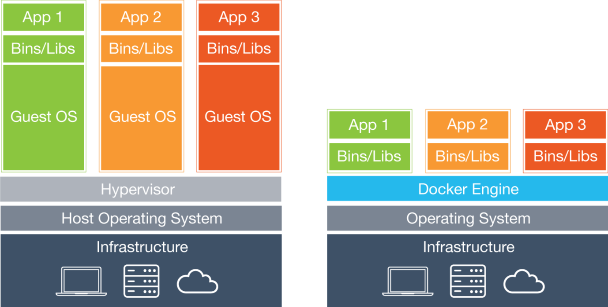
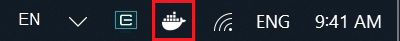
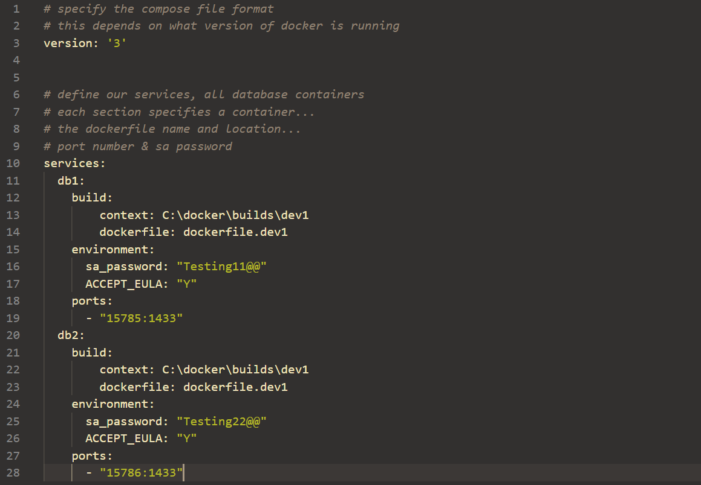
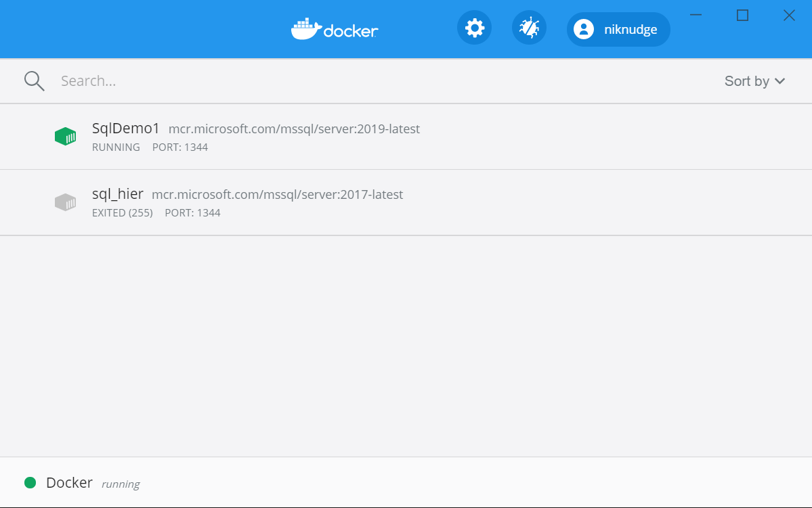
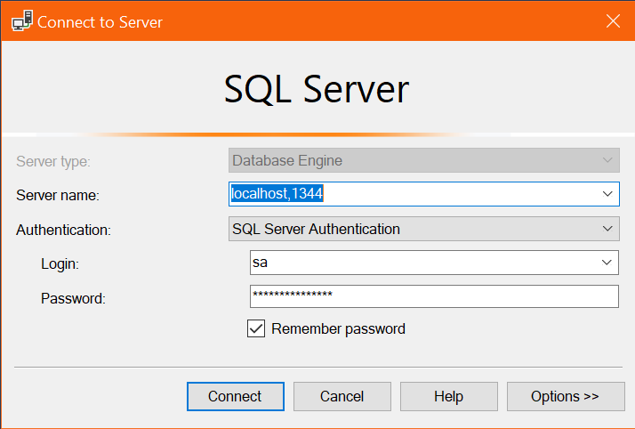

Docker

Spin Up A SQL Database Quicker Than This Talk
Another VM?

Where Is It?
N.B. This is for Windows 10 Professional & Enterprise, for anything older download the legacy version
Once installed you should see a 'lil whale in the Taskbar.

Get Up & Running
Docker is a CLI application, so all calls have to be made in Powershell/CMD/Bash/etc…
Basic Flow

How it’s done
# Grab the most recent version of image
> docker pull mcr.microsoft.com/mssql/server:2019-latest
# Run a containter called SqlDemo1 through localhost:1344
> docker run --name SqlDemo1 -e "ACCEPT_EULA=Y" `
-e "SA_PASSWORD=aeb128SS111we" -p 1344:1433 `
-d mcr.microsoft.com/mssql/server:2019-latest
Too much?
We can create a dockerfile
We then build this dockerfile and run using
> docker run -d -p 15788:1433 --name SqlDemo2 demoImage
Or…
docker-compose
> docker-compose up -d
Spin 'em up!
Running the initial docker run → container built and spun up
Running docker stop or docker kill → container stops but remains in saved state
Running docker start → container starts back up again
Removing Containers
To remove the container completely use
> docker rm [ID]
Any persisted data or storage will also be removed, so ensure what you have is backed up or stored outside of the container
What’s running?
> docker container ls
> docker container ls -a
Docker Dashboard
Hydration Time

Quick Recap
- Container environments not VM
- You download the image → Run to spin it up into a container
- Use
dockerfileanddocker-compose.ymlto customise spin up - Interact via CLI
You now know the what and how…
But why?

Why
- Single Contained Environment
- Already Pre-configured for use
- Easy to Build & Destroy
- Excellent for development
- Excellent for testing
- Excellent for any type of temporary environment
- Orchestration
- Can easily increase the number of identical containers
- Perfect for load balancing
Not All of these can apply to how we SQL
But…
Works Wonders for running SQL Demonstrations
& Using Containers in the CI/CD Pipeline
- Build Environments
- Testing Environments
So How To SQL
Once we spin up an instance we simply connect using SSMS with the ports & SA password we defined earlier.
Teach Me More

Docker provides a “school” learning website & Microsoft has a nice setup page for SQL containers.